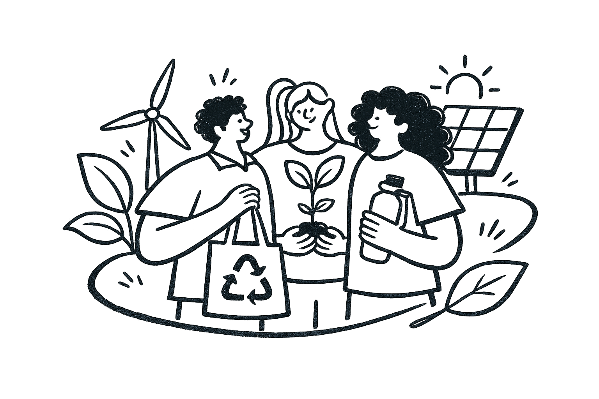
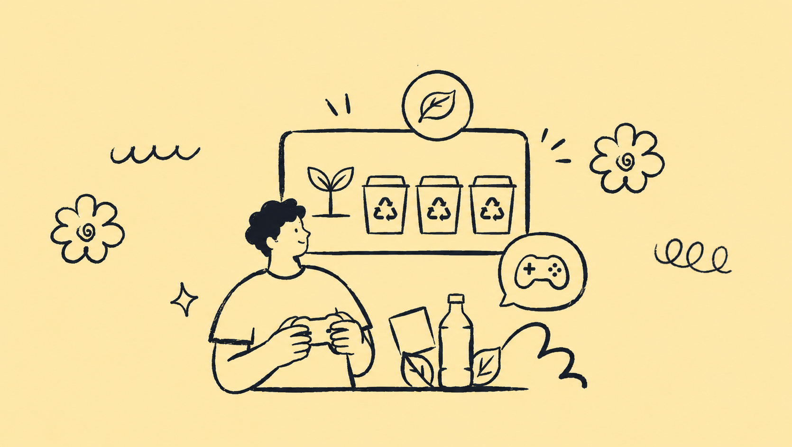
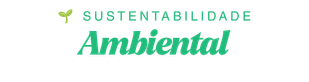
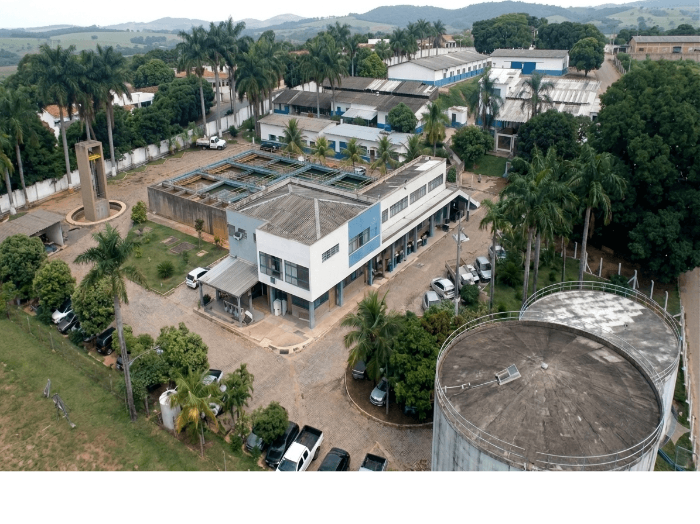
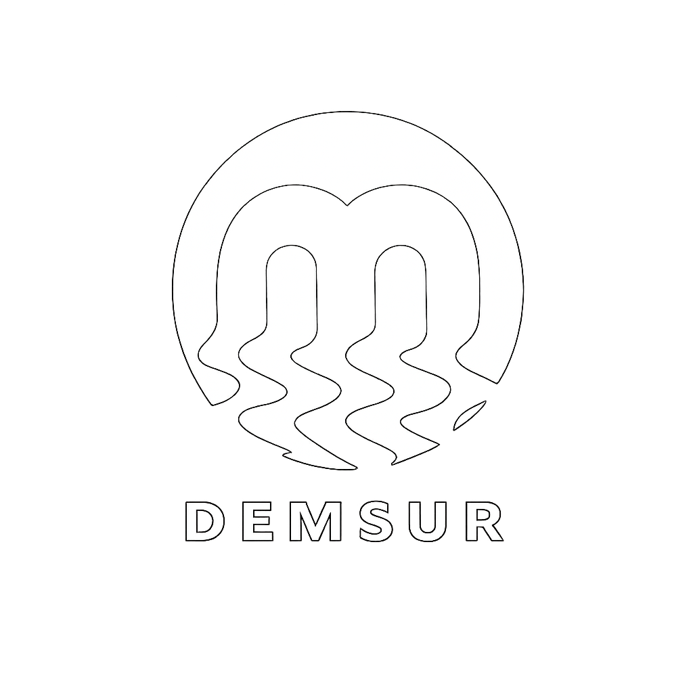
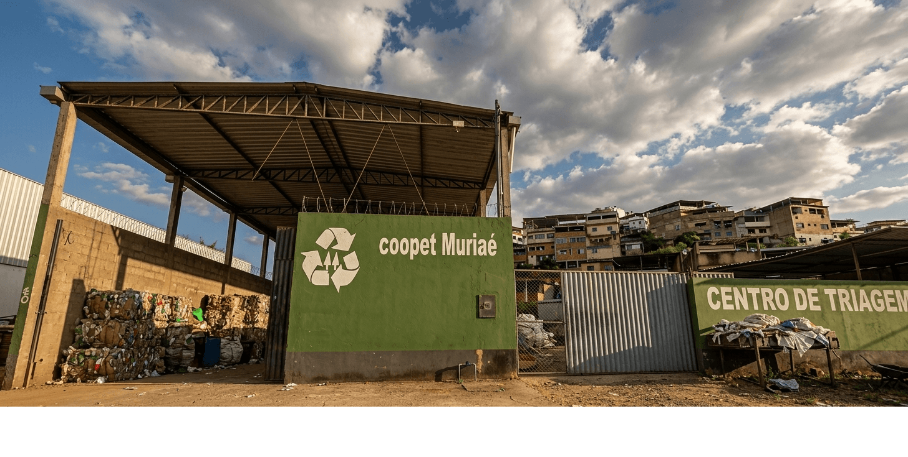

Nossas escolhas diárias influenciam diretamente o meio ambiente.
Compreender esse impacto é o primeiro passo para adotar hábitos mais sustentáveis.

Responda as perguntas e aprenda!
TÔ DENTRO!Reflita sobre o quanto você afeta o meio ambiente no seu dia a dia!

Nossas escolhas diárias influenciam diretamente o meio ambiente.
Compreender esse impacto é o primeiro passo para adotar hábitos mais sustentáveis.
A separação correta dos resíduos facilita a reciclagem.
Reduz a poluição e contribui para o reaproveitamento de materiais.
O uso responsável de recursos naturais ajuda a preservar o planeta.
Garante um futuro mais equilibrado para todos.

Pequenas atitudes podem gerar grandes mudanças.
A sustentabilidade começa com ações simples do dia a dia.
O futuro do planeta é construído pelas escolhas que fazemos hoje.
Faça parte dessa mudança.
A coleta seletiva porta a porta em Muriaé é realizada pelo Demsur (Departamento Municipal de Saneamento Urbano).
O recolhimento de materiais recicláveis como papel, plástico, metal e vidro acontece de segunda a sexta-feira.
Você pode conferir os horários e demais informações sobre a coleta clicando aqui.



A Coopet Muriaé é uma cooperativa que atua na coleta seletiva e na triagem de materiais recicláveis no município.
Seu trabalho ajuda a reduzir a quantidade de resíduos enviados aos aterros e incentiva a reciclagem.
Além dos benefícios ambientais, gera emprego e renda para seus cooperados.
Você pode acompanhar as ações da Coopet clicando aqui.